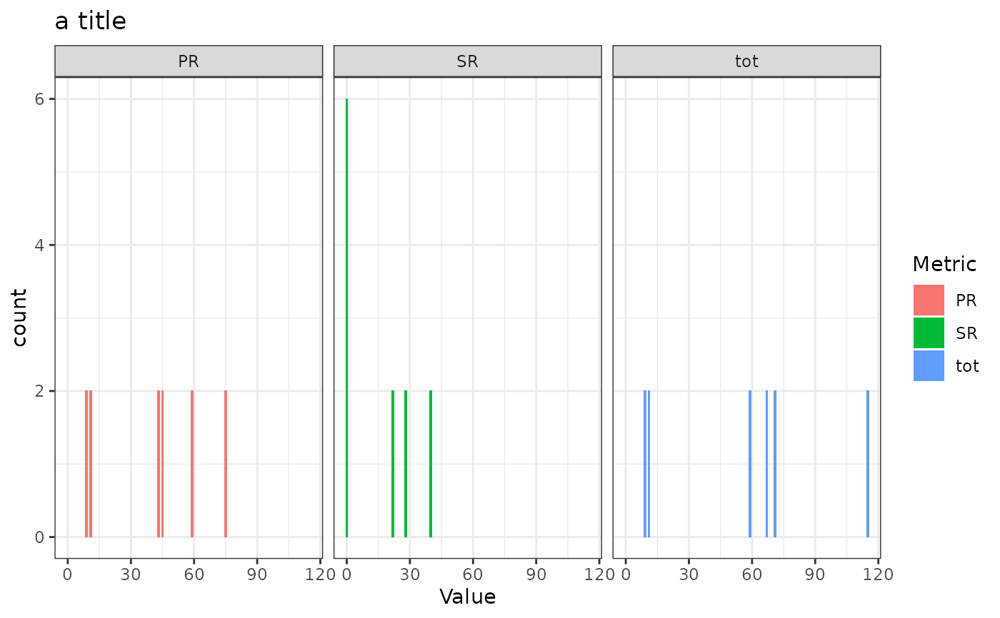

Plots histograms for the number of split reads (SR), paired end reads (PR), and their
sum (tot) across all BNDs. Observations where the SR or PR value is 0 (NA) are not shown.
plot_bnd_sr_pr_tot_hist(
d,
title = "SR, PR and SR + PR histogram for BNDs",
subtitle = "Values of 0 (NA) are not shown."
)A data.frame with an SR_PR_alt column.
Main title of plot.
Subtitle of plot.
A ggplot2 plot object.
x <- system.file("extdata/umccrise/sv/manta.tsv", package = "gpgr")
d <- process_sv(x)$unmelted
plot_bnd_sr_pr_tot_hist(d, "a title")
